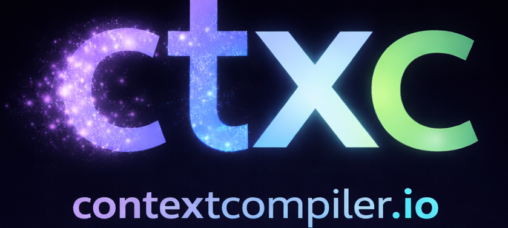

Module
Une capacité atomique, stateless et réutilisable. Un module fait une seule chose dans le pipeline.

Pre-LLM • Traceable • Module-based
Context Compiler absorbe la partie ETL liée à l’hétérogénéité des entrants pour éviter de polluer le prompt. Les sources sont lues, normalisées, fragmentées, vérifiées et transformées en artefacts gouvernés, traçables et auditables avant toute consommation par un modèle.
$ ctxc compile .
Inputs discovered ................ 124
Fragments emitted ................ 2,931
Views rendered ................... 4
Guards findings .................. 0 critical
Artifacts
prompt.context.md
evidence.index.json
reasoning.graph.json
security.report.md
context.health.json
Output ........................... artifacts generatedPipeline
Context Compiler assemble des modules en packs, les exécute dans un pipeline déterministe, puis les applique à des blueprints orientés cas d'usage pour produire une solution prête à l'emploi.
Concepts
Une capacité atomique, stateless et réutilisable. Un module fait une seule chose dans le pipeline.
Une composition cohérente de modules prête à l'emploi pour accélérer la configuration.
La chaîne de transformation où chaque étape reçoit, transforme puis transmet les données.
Une solution complète orientée use case qui combine packs, modules et pipeline pour produire un résultat final.
Pre-LLM
Zéro appel LLM dans le compilateurTraçabilité
EK / ER système de preuve stable et versionnéModules
Extensible readers, guards, vues, templates, exportersPourquoi
Là où beaucoup de chaînes agentiques injectent au modèle des données encore chargées de logique ETL, Context Compiler déplace ce travail en amont. On absorbe la diversité des formats, on normalise, on structure, on prouve, on contrôle, puis seulement on livre un contexte exploitable.
Le but est simple : arrêter de polluer le prompt avec les problèmes d’ingestion, de transformation et d’hétérogénéité des entrants.
Le compilateur ne contacte jamais de modèle. Il prépare un contexte fiable avant toute exécution agentique.
Le déterminisme porte sur la partie entrante dans le LLM. Plus cette entrée est grande, stable et non ambiguë, plus le raisonnement du modèle est contraint et moins il ouvre de chemins d’interprétation inutiles.
Chaque fragment devient une évidence, conserve sa source, son localisateur et ses identifiants de preuve pour relier le résultat à son origine.
Des modules dédiés peuvent garantir que des données sensibles ne se retrouvent pas dans le contexte compilé avant d’être exposées au modèle.
Readers, transcoders, guards, views, personas, templates et exporters s'ajoutent comme modules de runtime.
Prompt, index, graph et rapports peuvent être supprimés puis régénérés à l'identique à partir des mêmes entrées. Deux contextes compilés peuvent ainsi être comparés facilement, et la preuve finale peut s’appuyer sur les statistiques d’usage des évidences.
Sorties
Contexte final
prompt.context.mdLe contexte consolidé, prêt à être consommé par un IDE, un agent ou un humain.
Traçabilité
evidences.index.jsonLe mapping complet entre preuves, sources, révisions et métadonnées.
Views
view.default.md et autres vuesDes projections concrètes du contexte compilé, adaptées à différents usages.
Personas
personas.active.jsonUn même contexte peut être cadré différemment selon le point de vue métier, technique ou analytique attendu.
Graphe
reasoning.graph.jsonLe graphe canonique qui relie fragments, sources et structure de raisonnement.
Santé & sécurité
security.report.md et context.health.jsonLes rapports qui aident à gouverner la qualité, la sécurité et l’exploitabilité.
Aperçu
# Global Instructions
## Commands
- view <name>
## Objectives
- repondre avec le contexte compile
- expliciter les points utiles
## Project
- name
- summary
## MUST
- citer les evidences
- respecter les contraintes
## MUST NOT
- inventer des faits
- exposer des donnees sensibles
## Views
- default
- domain specificCe que ça change
Le modèle reçoit un cadre déjà structuré, sans avoir à reconstruire lui-même l’organisation du contexte.
Aperçu
{
"ek": "E-8ad333757aec",
"path": "docs/specs/...",
"locator": "section:3",
"revision": "ER-..."
}Ce que ça change
Chaque information utilisée dans l’analyse reste vérifiable et rattachée à sa source d’origine.
Aperçu
## Evidence
### E-8ad333757aec
...
### E-ed90deb02e34
...Ce que ça change
Le contexte peut être présenté selon plusieurs angles utiles sans réinjecter toute la complexité brute des entrants.
Aperçu
{
"active": [
"analysts.business",
"developers.dotnetcore",
"testers.analyst"
],
"mode": "append"
}Ce que ça change
Un même socle de preuves peut servir plusieurs points de vue sans dupliquer le contexte compilé.
Aperçu
{
"nodes": [...],
"edges": [...],
"artifacts": ["prompt", "views", "reports"]
}Ce que ça change
Le contexte compilé devient aussi exploitable par des outils d’inspection, de couverture et d’analyse aval.
Aperçu
# Security Report
- no critical findings
{
"health": "ok"
}Ce que ça change
Les équipes gardent une vue opérationnelle sur la qualité, la sécurité et la fiabilité du contexte fourni au modèle.
Cas d’usage
Standardiser la préparation de contexte pour plusieurs workflows sans mélanger extraction, sécurité et rendu.
Compiler docs, specs, code, normes et données métier en un contexte versionnable et rejouable, y compris pour rédiger des spécifications à partir de référentiels normatifs.
Appliquer des guards avant toute consommation et conserver une traçabilité exploitable en audit.
FAQ
Non. Context Compiler prépare le contexte avant l’usage LLM. Il ne génère pas de réponse et ne contacte pas de modèle.
Parce que le déterminisme concerne le traitement des entrants : compiler deux fois les mêmes entrées doit donner le même résultat. Cela n’agit pas directement sur le déterminisme du modèle lui-même, mais réduit l’ambiguïté de ce qui lui est fourni, facilite les tests, la comparaison de sorties, l’audit et la confiance opérationnelle.
Il évite de polluer le prompt avec l’ETL nécessaire pour absorber des sources hétérogènes. Cette complexité est traitée en amont, avant la consommation par le modèle.
EK identifie un fragment de façon stable, ER reflète sa révision basée sur le contenu. Les deux assurent preuve et traçabilité.
Oui. Le modèle est modulaire : readers, guards, views, templates et exporters sont pensés pour être chargés au runtime.
Stack
Context Compiler s’appuie sur .NET 10 pour offrir une base robuste, portable et industrialisable. Grâce à .NET, la solution reste cross-platform, tandis que les modules peuvent être packagés, versionnés et diffusés via NuGet.
Une base moderne pour industrialiser la compilation de contexte dans des environnements d’entreprise et de production.
Grâce à .NET, le compilateur peut être exécuté dans des environnements Windows, Linux ou macOS sans changer de stack.
Les modules peuvent être packagés, versionnés et distribués comme des packages NuGet, avec un cycle de vie propre.
Packages
Context Compiler s’adapte à des usages très différents. Selon le besoin, il est possible d’ajouter les briques utiles pour lire les bonnes sources, structurer le bon contexte et produire les bons artefacts.
Les modules représentent des capacités atomiques. Les packs regroupent ces modules en ensembles cohérents prêts à l'emploi.
Les blueprints vont un cran plus loin : ils assemblent packs, modules et rendu pour adresser un use case prêt à l'emploi.
La galerie ci-dessous permet d’explorer les extensions disponibles, d’identifier celles qui correspondent au besoin et d’accéder directement à leur publication NuGet.org ainsi qu’à leur code source.
Chargement du catalogue...
Next step